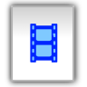

Introduction
GreenForce-Player is a portable alternative media player, with many additional features.
One of these features is to protect media files.
You can encrypt your audio and video files with a password and protect them against screenshots.
An other nice feature is the coverflow. It allows you to start playback by clicking on the cover of your favorite music.
Last but not least, there is a cache system. It is used to reduce usage of your hard disc.
The software has been developed for Windows. It was tested with Windows XP, Vista, 7 and 8.
GFP is easy to install and use and ist therefore ideal for beginners. However, there are also advanced features for professional usage. It suits perfectly on USB sticks, because it is compact, portable and does not require an installations. You just need to copy one single executable with a size of 3.5MB on the stick (just GreenForce-Player.exe is required).
Terms and conditions
GreenForce Player
This program is provided "AS IT IS".
The author is not responsible for any damage (or damages) caused by GreenForce-Player or caused by the use of the GreenForce-Player.
This is except for damages which cannot be excluded because of law.
You are warned that you use this software at your own risk.
No warranties are implied or given by the author or any other representative.
All components are copyrighted by the author.
You are not allowed to reverse engineer the whole or parts of the software.
You are also not allowed to modify or patch executables and other files of this software.
You are allowed to use this software in noncommercial and commercial products.
If the software is used within commercial products a mention of the author and a donate would be desirable but is not necessary.
OpenJPEG
Copyright (c) 2002-2012, Communications and Remote Sensing Laboratory, Universite catholique de Louvain (UCL), Belgium
Copyright (c) 2002-2012, Professor Benoit Macq
Copyright (c) 2003-2012, Antonin Descampe
Copyright (c) 2003-2009, Francois-Olivier Devaux
Copyright (c) 2005, Herve Drolon, FreeImage Team
Copyright (c) 2002-2003, Yannick Verschueren
Copyright (c) 2001-2003, David Janssens
All rights reserved.
Redistribution and use in source and binary forms, with or without
modification, are permitted provided that the following conditions
are met:
1. Redistributions of source code must retain the above copyright
notice, this list of conditions and the following disclaimer.
2. Redistributions in binary form must reproduce the above copyright
notice, this list of conditions and the following disclaimer in the
documentation and/or other materials provided with the distribution.
THIS SOFTWARE IS PROVIDED BY THE COPYRIGHT HOLDERS AND CONTRIBUTORS `AS IS'
AND ANY EXPRESS OR IMPLIED WARRANTIES, INCLUDING, BUT NOT LIMITED TO, THE
IMPLIED WARRANTIES OF MERCHANTABILITY AND FITNESS FOR A PARTICULAR PURPOSE
ARE DISCLAIMED. IN NO EVENT SHALL THE COPYRIGHT OWNER OR CONTRIBUTORS BE
LIABLE FOR ANY DIRECT, INDIRECT, INCIDENTAL, SPECIAL, EXEMPLARY, OR
CONSEQUENTIAL DAMAGES (INCLUDING, BUT NOT LIMITED TO, PROCUREMENT OF
SUBSTITUTE GOODS OR SERVICES; LOSS OF USE, DATA, OR PROFITS; OR BUSINESS
INTERRUPTION) HOWEVER CAUSED AND ON ANY THEORY OF LIABILITY, WHETHER IN
CONTRACT, STRICT LIABILITY, OR TORT (INCLUDING NEGLIGENCE OR OTHERWISE)
ARISING IN ANY WAY OUT OF THE USE OF THIS SOFTWARE, EVEN IF ADVISED OF THE
POSSIBILITY OF SUCH DAMAGE.
Installation
The GreenForce-Player does not need an installation. It requires only the GreenForce-Player.exe.
Therefore it is ideal for use on a portable media like an USB stick.
The file extension ".gfp" will be registered automatically at the first start of the application. Additionally the protocol "gfp://" will be available to open media files directly from the browser (e.g. with an url like gfp://www.your-domain.tld/your-video.gfp). This allows streaming of media files via the HTTP protocol.
Note that despite the name of the protocol it can be also used to stream unencrypted media files (e.g. gfp://www.your-domain.tld/your-video.wmv is also possible). Internally "gfp://" will be replaced by "http://".
There is also an Installer available which will create additional entries in the program menu and on the desktop.
Play a media file
You can load media files with the menu item "Load" or you can use the Drag and Drop function.
It is also possible to use playlists where you can load media files from. The video/audio will play automatically.
The supported audio and video formats depend on installed codecs of the operating system. There is a build in support for .ogg and .flac files.
Organize playlists
To use a playlist choose the menu item "Playlist" in the menu "Media".
There are the following commands in the toolbar.
Playlists can be organized with the following functionality:
- Create a playlist
- Delete a playlist
- Import a complete playlist
- Export a complete playlist
- Play the selected file of the active playlist
Media resources can be organized with the following functionality:
- add a file to the active playlist
- add a complete folder to the activ e playlist
- add a URL to the playlist
- remove a file from the playlist
Coverflow
To use the coverflow choose the menu item "Coverflow" in the menu "Media".
You need a playlist to use it, because the coverflow shows all files from all playlists.
The coverflow has two different modes to presentation the covers "2D" and "3D".
Protect a media file
To protect a media file with a password choose the menu item "Protect media" in the menu "DRM".
You must set the password, source file (the media file which should be protected) and the destination file.
For the password you can set a tip/hint to help you remembering your password.
You can also set tags and a cover (.bmp, .jpg, .jp2, .png, .tga and .tiff) for your protected media file.
By default password protected media files are protected against screenshots. All options regarding portection can be found on the tab "Protection".
Beside the "Disallow screenshots" option there is an additional option to enforce screenshot protection. This can be done by deselecting the checkbox "Not enforce screenshot protection".
Note that this could completly prevent playback of the media file if the operating system does not fit the requirements (e.g. old operating systems, virtual machines). But keep in mind that this will be no 100% solution to protect the content. It is still possible to make a photography of the monitor with a camera.
Further possiblities are setting an expire date for the protected media file or allowing it to run only on a certain machine (possible by setting the "Machine ID" field).
A really nifty option is to create a standalone EXE file which includes the player and the protected media file.
To do this, you just need to check "add player to the media file". The big advantage then is that you do not need to have GreenForce Player installed to play the protected media. All necessary files are directly included in the prtected file (however a codec is still required on the system).
Creating a standalone EXE file also allows you to choose your own icon of the executable. The icon must be an .ico file. You can also additional command line parameters to your standalone executable (e.g. /fullscreen to start your protected media file in fullscreen mode). Just click on the "?" button to list possible parameters.
If this sounds interesting to you also download the GreenForce Player SDK, there you will find an additional tools. The SDK includes a tool to automate crateion of .gfp files, a tool to create executables with can contain more than one media file in one executable and many more interesting tools.
Options
To change the options of the player choose the menu item "Options" in the menu "File".
Language
Here you can select the language of the player.
Loglevel
The loglevel has three different options:
"None" Nothing will be logged.
"Error" Errors will be logged.
"Debug" Debug info and errors will be logged, use this option to report a bug.
You will find log files in the path "%APPDATA%\GF-Player".
Only show in systray when minimized
This options influence that the player isn't in your taskbar if its minimized.
You can control it over the systray.
Automatic updates
If this option is selected the player checks at every program start the latest version.
If there are updates it will install it automatically.
Single instance
This means the player can be opened only once at one time.
If you load another media file it will use the existing instance of the player.
Video renderer
If you have problems with the presentation of videos you can test another renderer.
Audio renderer
If you have problems with the audio of the player, you can test another audio renderer.
Size of RAM cache
This is the maximal size(in MB) of all media files that will cached in the RAM.
Size of RAM cache per file
This is the maximal size(in MB) of a file for the RAM cache. Do not use to huge values here because this will result in longer loading times.
We recommend to use values between 10 and 30 MB.
Snapshot path
Here you can select the path where the snapshots will be saved.
Snapshot format
Here you can choose the format of the snapshots (.jpg, .png, .jpeg2000)
Background color
The color of the video background.
Theme
You can choose a theme/iconset for the main window of the player (Default, Classic, Basic, Black, Gray).
{kind=link}
{kind=link}
{kind=link}
{kind=link}
{kind=link}
{kind=link}
{kind=link}
{kind=link}
{kind=link}